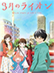
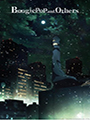
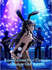
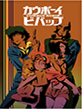
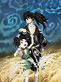
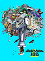
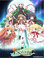
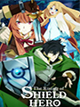
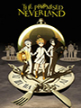

Lista de Animes
A-Z
3 gatsu no lion
Assistir Anime

Esse é um conto gentil sobre pessoas tentando recuperar algo, além de ser um conto de batalha. A personagem principal, Rei Kiriyama, perdeu sua família num acidente quando era jovem. Agora ele é um jogador profissional de shogi, de apenas 17 anos, que tem o fardo da solidão profunda. Rei vive sozinho numa velha cidade em Tóquio, mas depois de conhecer três irmãs, Akari, Hinata e Momo, ele começa a mudar de pouco em pouco.
A Certain Magical Index III
Assistir Anime
A história se passa na Cidade Acadêmica, cidade na qual 80% dos seus cidadãos são estudantes e é tecnologicamente avançada localizada na região oeste de Tóquio, onde os alunos, chamados de "espers", estudam e desenvolvem habilidades especiais cuja fonte é a mente humana. Touma Kamijou é um estudante da Cidade Acadêmica cuja habilidade, a Imagine Breaker, possui o poder de anular quaisquer outros poderes usando sua mão direita, mas esse poder faz com que sua sorte também seja anulada, fazendo com que seja alvo de diversas furadas e problemas de azar.
Boku no Hero
Assistir Anime

Um mundo onde poderes começaram a existir, e as pessoas que os possuem, chamam seus poderes de "individualidade", 80% da população atual possui, os outros 20% são comuns... Como é o caso do jovem Midorya. Midorya quer, desde criancinha, ser um herói, graças ao símbolo da paz, All Might, que ele admira de mais. Por ter nascido normal, entrar na escola de heróis era impossível, porém, algo, um dia, simplesmente acontece, um encontro que muda tudo...
Boogie Pop
Assistir Anime

Boogiepop Phantom (ブギーポップは笑わない?) é uma série anime de terror, com 12 episódios. Boogiepop Phantom se passa em um período de cinco anos, mostrando o passado e o presente muitas vezes. No presente um grande feixe de luz aparece no meio da noite e misteriosamente alguns jovens começam a ganhar poderes especiais. Desde então alguns jovens começam a desaparecer, e esses desaparecimentos são atribuídos a uma lenda urbana chamada de Boogiepop. Boogiepop Phantom possui vários personagens com histórias diferentes, sendo que suas histórias vão se interligando conforme os episódios vão se passando.
Bunny Girl-senpai no Yume wo Mina
Assistir Anime

Azusagawa Sakuta presenciou uma cena que contrariava o senso comum, em uma biblioteca encontrou uma coelhinha comum. Ela era Sakurajima Mai, uma estudante da mesma escola de Sakuta e uma atriz aposentada ainda renomada. A garota lhe disse que aqueles ao redor dela não poderiam mais vê-la e ela foi a biblioteca apenas para confirmar isso. Seria esse relato mais um dos estranhos acontecimentos do tópico de sucessos da internet: O fenômeno inimaginável conhecido como "a síndrome da puberdade"? Sakura queria saber as razões por trás disso e se aproximou de Mai, decidindo então resolver o quebra cabeça.
Cowboy Bepop
Assistir Anime

Jet Black, Faye Valentine e outros, a bordo de uma nave interestelar chamada Bebop, têm seus olhos em uma recompensa lucrativa. No entanto, se eles esperam obtê-la, eles devem transportar o homem responsável por liberar veneno em Marte. Embora isso pareça ser um grande desafio que envolve alcançar o infame Vincent Volaju, nos anos de 2070, há mais problemas que a equipe da Bebop imagina.
Denpa teki na kanojo
Assistir Anime

A história de Denpa gira em torno de um deliqüente chamado Juuzawa Juu e de uma garota de comportamento estranho chamada Ame Ochibana, que jura total lealdade a ele de uma hora para outra. O comportamento dela passa a ser visto como “normal” com o tempo, mas quando ocorre o assassinato de um colega, as suspeitas de Juu vão diretamente para Ame.
Dororo
Assistir Anime

Um Samurai em busca de poder, fez um acordo com 48 demônios oferecendo todos os órgãos de seu filho recém nascido em troca de governar o mundo. Como consequência do pacto, seu filho nasceu com uma aparência horrenda, e acabou sendo abandonado num rio. O bebê conseguiu sobreviver graças ao Dr. Honma, um curandeiro que usou magia e métodos alquímicos para colocar em Hyakkimaru próteses trabalhadas a partir dos restos mortais de crianças que morreram na guerra.
Eve no jikan
Assistir Anime

O anime é ambientado num futuro próximo onde robôs com inteligência artificial executam tarefas domésticas para famílias e os androides, uma classe de robôs visualmente indistinguíveis dos humanos exceto pelos anéis de informação holográficos posicionados sobre suas cabeças, são alvos de frequentes críticas pelo Comitê das Éticas Robóticas por representarem uma ameaça à ordem natural humana, numa crença de que máquinas, sem a capacidade de sentir, não podem ser tratadas como humanos.
Kill la kill
Assistir Anime

Ryuuko Matoi é uma garota que viaja pelo mundo com uma espada que tem o formato de um dos lados de uma tesoura, com um objetivo: encontrar o portador da outra metade dessa “espada tesoura”, pois foi ele quem matou seu pai. No meio de sua jornada ela chega à uma academia onde um de seus alunos usa roupas especiais para derrotar seus inimigos. Após ser derrotada por um dos integrantes de lá, Ryuuko se une a um dos trajes e começa a ver que podem existir mais coisas do que ela imaginava, por trás da morte de seu pai.
Mob pshyco 100
Assistir Anime

A história revolve à volta de “Mob”, um rapaz que irá explodiar se a sua capacidade emocional atingir 100%. Este rapaz, com poderes psíquicos, ganhou a sua alcunha, “Mob”, devido ao facto de este não se destacar entre as outras pessoas. He mantém os seus poderes psíquicos “engarrafados”, de modo a poder viver normalmente,mas se o seu nível emocional atinge 100, algo toma controlo de todo o seu corpo.
Nanana's
Assistir Anime

A história se passa ao redor do tesouro de Nanana, um fantasma que já foi uma linda garota NEET. Um garoto chamado Juugo foi deserdado por seu pai e obrigado a se transferir para um colégio na "Zona de Alunos Especiais", uma ilha artificial. Com apenas 40 mil ienes por mês para sobreviver, Juugo escolhe um apartamento barato que por acaso é assombrado por Nanana. Juugo e membros do clube de aventura da escola entram numa "real caça a tesouros" na ilha para encontrar a Coleção de Nanana, um tesouro que possui poderes misteriosos.
One punch man
Assistir Anime

Um homem com apenas um soco, ou seja, ele não precisa dar mais de um soco pra derrotar qualquer inimigo. Este homem é Saitama, um jovem recém-desempregado, que após salvar um garoto de ser morto por um homem caranguejo, resolve se tornar herói. Em sua jornada, Saitama fica tão forte, que derrota os monstros com apenas um soco e isso o deixa muito entediado, e sempre encontra alguém que diz ser mais forte, mas no final é sempre a mesma história, como disse antes, um soco só basta.
Rewrite
Assistir Anime

Keith Michaels (Grant) é um roteirista britânico que ganhou o Óscar de Melhor Roteiro em 1998. Mas desde que ele se divorciou e faliu, começa a dar aulas de roteiro na Universidade de Binghamton no interior de Nova Iorque e se apaixona pela mãe solteira Holly Carpenter (Tomei).
Sakurasou
Assistir Anime
Baseado nas light novels de Hajime Kamoshida, a história se passa com Sorata Kanda, um estudante que vive no Sakurasou, o dormitório para alunos problemáticos da escola. Nisso, um dia a bonita e talentosa Mashiro Shiina acaba se mudando para o tal dormitório.
Shield hero
Assistir Anime

Naofumi Iwatani, um otaku não-carismático que gasta seus dias em jogos e mangás, de repente encontra-se convocado para um universo paralelo. Iwatani descobre que é um dos quatro heróis equipados com armas lendárias, sendo encarregado de salvar o mundo de uma terrível profecia. Ele assume o título de o “Shield Hero”, o mais fraco dos quatro heróis, porém nem tudo é o que parece. Agora ele deve seguir o seu novo destino para se tornar o lendário Shield Hero e salvar o mundo da destruição.
Slime datta ken
Assistir Anime

Depois de ser morto por um ladrão que fugia, um rapaz normal de 37 anos se encontra reencarnado em um outro mundo com slime cego com habilidades únicas. Com um nome "Rimuru Tempest" ele chegou depois de conhecer seu novo amigo, o "nível de catástrofe", Dragão da Tempestade Verudora, ele começa sua vida de slime em outro mundo com seu crescente número de seguidores.
The promised neverland
Assistir Anime

Emma é uma órfã que vive no orfanato Grace Field House junto com outros órfãos. Dentre todos eles, Emma, Norman e Ray são os mais velhos e os únicos que conseguem as pontuações mais altas em testes. Emma observa que, enquanto eles são capazes de fazer o que querem, não podem sair do orfanato para irem ao mundo exterior. Uma noite, a menina Conny, uma das crianças órfãs, é adotada e se despede do orfanato. Emma descobre que Conny deixou seu coelho de pelúcia Bernie para trás. Junto com Norman, ela vai atrás de Conny. No entanto, eles ficam chocados ao descobrirem que ela está morta e a casa onde vivem é na verdade uma fazenda onde eles são criados e colhidos para se tornarem alimentos de criaturas demoníacas.
Witch Craft Works
Assistir Anime

O personagem principal (Takamiya, Honoka) é um aluno regular, cujo único problema parece ser que ele se senta ao lado Kagari, Ayaka, a beleza número 1 da escola. Eles nunca conversaram antes, até que uma pequena interação entre ele resulta em o fã clube dela ficar contra ele. No entanto, quando uma parte do prédio da escola cai e está prestes a mandá-lo para a vida após a morte, foi ela quem veio em seu socorro. Porém, ela estava vestida como uma bruxa, carregando-o nos braços e flutuando em uma vassoura.
Yuragi
Assistir Anime
Fuyuzora Kogarashi tem características paranormais desde sua infância. Sempre conseguiu ver fantasmas e ser possuído por eles, tornando sua vida um tanto quanto complicada. No meio de sua adolescência aprendeu a lutar contra esses espíritos na base da porrada. Kogarashi é pobre e sem-teto, mas consegue um trato: ele poderá morar de graça para sempre no quarto Nº 4 da casa de banhos Yuragi se conseguir tirar o espírito que assombra o lugar.